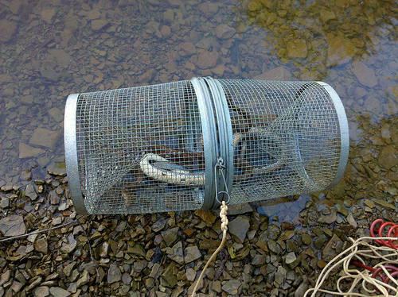

Curso de
Índice
- Python... é uma cobra?
- Mas, morde ?
- Zen of Python
- Interpretador Python
- Ofidioglossia
- Ninho de cobras
- Conceitos funcionais
- OO.....__
- Entra filhote, sai cobra criada
- Snake Trap
Apêndices
- Apêndice A - Alguns exemplos
- Apêndice B - Just for Fun
- Apêndice C - Além da linguagem
- Apêndice D - Melhorar a Ofidioglossia
O que é Python... uma cobra?
Python é uma linguagem de programação de alto nível, interpretada, imperativa, orientada a objetos, funcional, de tipagem dinâmica e forte. Foi lançada por Guido van Rossum em 1991. Atualmente possui um modelo de desenvolvimento comunitário, aberto e gerenciado pela organização sem fins lucrativos Python Software Foundation.
O nome Python teve a sua origem no grupo humorístico britânico Monty Python, criador do programa Monty Python's Flying Circus, embora muitas pessoas façam associação com o réptil do mesmo nome.
Posteriormente a cobra começou a ser adotada como logo da linguagem.
Referência: Wikipedia
Mas, morde ?
|
Comparada com outras linguagens de mercado, Python tem se sobressaído pela simplicidade, já sendo adotado por diversas universidades pelo mundo como primeira linguagem em diversos cursos de TI. Python é provavelmente a linguagem mais usada no mundo por não programadores Outro fato relevante sobre esta simplicidade se dá pela sua filosofia básica: Zen of Python |
Zen of Python
- Beautiful is better than ugly.
- Explicit is better than implicit.
- Simple is better than complex.
- Complex is better than complicated.
- Flat is better than nested.
- Sparse is better than dense.
- Readability counts.
- Special cases aren't special enough to break the rules.
- Although practicality beats purity.
- Errors should never pass silently.
Zen of Python
- Unless explicitly silenced.
- In the face of ambiguity, refuse the temptation to guess.
- There should be one-- and preferably only one --obvious way to do it.
- Although that way may not be obvious at first unless you're Dutch.
- Now is better than never.
- Although never is often better than right now.
- If the implementation is hard to explain, it's a bad idea.
- If the implementation is easy to explain, it may be a good idea.
- Namespaces are one honking great idea -- let's do more of those!
- Quadrinização do Zen of Python (em português)
import this
Interpretador Python
- Vários interpretadores/compiladores/VMs: CPython, IronPython, Jython, pypy, Rpython, etc
- Utilizar CPython (sugestão ipython)
- Vantagens de ter um interpretador interativo
- Interpretador × VMs × Compiladores
- Builtins
- IO Básico: print, raw_input
- Alo mundo
Alo Mundo
print('Alo Mundo')
Ofidioglossia
- Variáveis: tipadas forte e dinamicamente
- Garbage Collector
- Constantes ... inexistentes
- Braceless: indentação é essencial
- Tudo é objeto ... inclusive funções
- Tipos básicos: inteiros, inteiros longos, complexos, strings, bytes, floats, Booleans
- Qualquer objeto pode ser avaliado em uma expressão booleana
- Operadores básicos e sua correlação com os métodos
- Mutáveis e Imutáveis
- Escopo das variáveis
- Explicar listas, tuplas, sets e dicionários, slicing
- Construções básicas: if, for, while
- Operador ternário
Ninho de cobras
- Precisamos de um editor, não necessariamente uma IDE
- Encoding e o shebang
- Indentação, PEP-8
- Como executar os programas
- Packages, Modulos, Imports ...
- Funções: def, pass, lambda
- Parâmetros opcionais, dinâmicos, nomeados, default com mutáveis
Conceitos funcionais
- map, filter, reduce
- List comprehension (listas, tuplas e dicionários)
- Outras funções de agregação
OO.....__
- Classe e métodos, herança, polimorfismo, herança múltipla, mixins, encapsulamento
- __init__
- Método de classe e estáticos
- Self... por que explícito é melhor que implícito
- privado ?? protegido ?? Overrated !
- Cadê os gets e sets ??
- Não temos sobrecarga de métodos... não é necessário
- Não temos generic... Python é naturalmente generic
Classe Pessoa
Classe Pessoa+
Entra filhote, sai cobra criada
- open, file object
- read, readline, iterators
- write
- close
Snake Trap
- Exceções são classes
- try...except...finally
- raise

Apêndice A - Alguns exemplos
- Equação de segundo grau
- Fatorial
- Fibonacci
- Ler 4 notas do teclado e mostrar todas as notas e a média na tela
- Lista de Exercícios
Equação de Segundo Grau
Fatorial
Fibonacci
Apêndice B - Just for Fun
- a,b = 2,3
- a,b = b,a
- 2 < x < 4
- Baterias inclusas
Sobrecarga de Operadores
Apêndice C - Além da linguagem
Apêndice D - Melhorar a Ofidioglossia
Obrigado !
Apresentação disponível no GitHub
Juracy Filho
Twitter: @juracy_filho